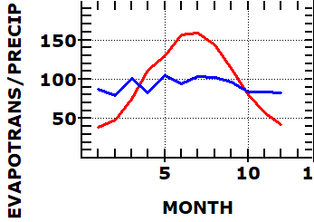

 |
Right clicking on the map provides the water budget, with the rainfall in blue and the potential evapotranspiration in red. |
http://www.fao.org/geonetwork/srv/en/metadata.show%3Fid=7416%26currTab=simple has ASCII grids monthly reference evapotranspiration - 10 arc minutes, 1961-1990
We combine this with precipiation from http://worldclim.org/version2 30 sec to 10 minutes
Fick, S.E. and R.J. Hijmans, 2017. Worldclim 2: New 1-km spatial resolution climate surfaces for global land areas. International Journal of Climatology.
http://www.fao.org/nr/water/aquastat/main/index.stm
http://www.fao.org/nr/water/aquastat/climateinfotool/index.stm
Lastest version of data is at http://data.ceda.ac.uk/badc/cru/data/cru_ts/cru_ts_4.01/data/ but not trivial to use
Last revision 8/2/2018